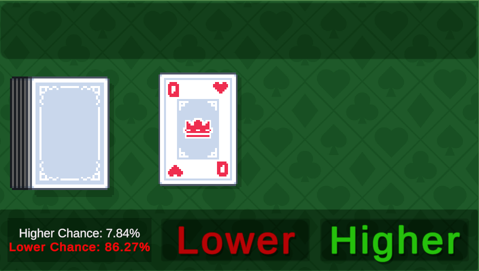
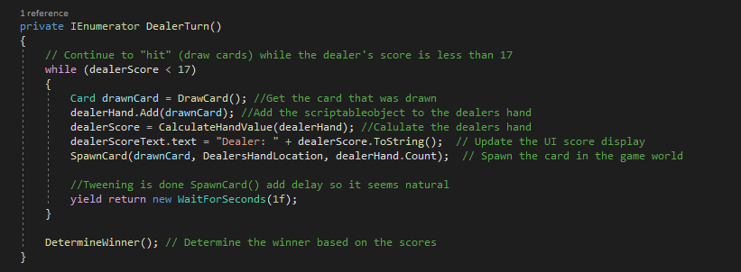

Planning
I was inspired to recreate Blackjack after visiting Las Vegas. I wanted to practice basic strategy while improving my programming skills. I researched the rules online and set out to recreate what I learned.
High-Low Gameplay
Development
I started by creating scriptable objects for the cards. I decided to recreate Hi-Lo as a starter game to ensure the cards were randomly drawn from the deck and to familiarize myself with handling card values. This would serve as a foundation for developing a more complex game like Blackjack. Setting up a card deck system with the ability to use multiple decks was straightforward with scriptable objects. The real challenge was experimenting with DOTween for card animations, which turned out to be quite fun.
Scriptable deck of cards.
Basic card values.
Hi-Lo
Hi-Lo is a simple card game where the player guesses whether the next card will be higher or lower than the current card. The game continues until the player makes an incorrect guess.
In this game, I implemented a simple UI that displays the current card and allows the player to make their guess. The game keeps track of the player's score and provides feedback on their guesses. It also shows the probability of the next card being higher or lower based on predictions.
To make the game more engaging, I added animations using DOTween for card transitions and a simple scoring system to track the player's performance.
You can play the game here on this page or on Itch.io.
 Play Hi-LoBlackjack
Blackjack is a popular card game where the goal is to get as close to 21 as possible without going over. The player competes against the dealer, and the game involves strategy and decision-making.
In my implementation of Blackjack, I created a simple UI that displays the player's hand, the dealer's hand, and the current score. The player can choose to hit or stand based on the rules of the game.
Unfortunately, I forgot to implement features like doubling down or splitting. If I were to recreate the project, I would ensure these key features are included.
To enhance the experience, I added sound effects and animations for card dealing and player actions. Chips are stacked and spawned with a smooth fade-in effect.
For the dealer, I implemented a simple AI that follows the basic rules of Blackjack, such as hitting on 16 or less and standing on 17 or more.
Dealer logic for the game.
You can play the game on Itch.io.
Play Blackjack